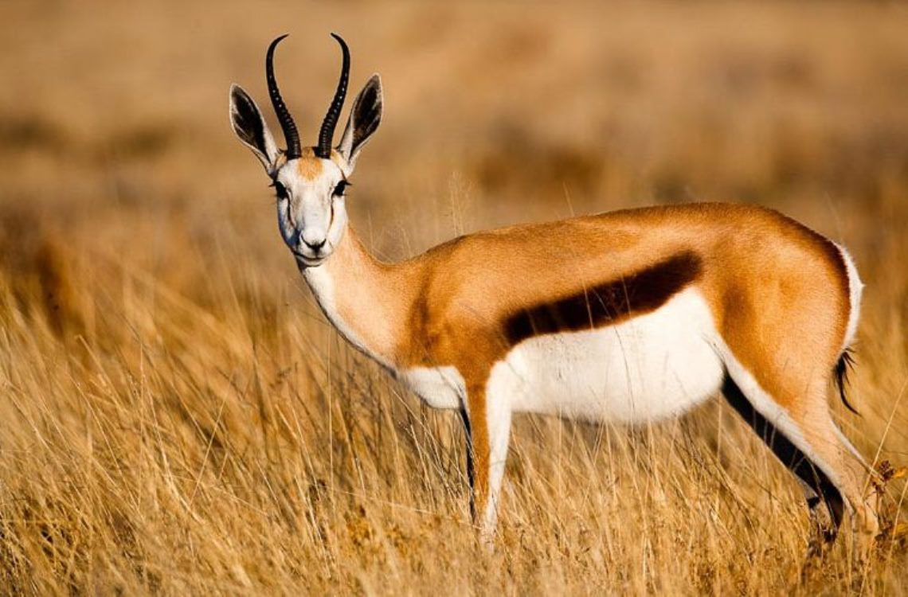
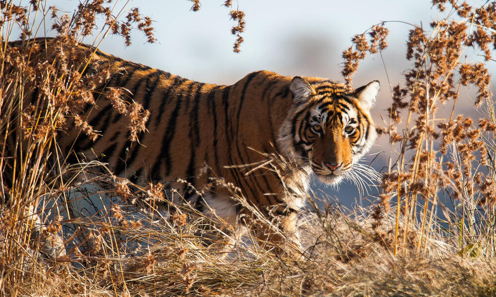
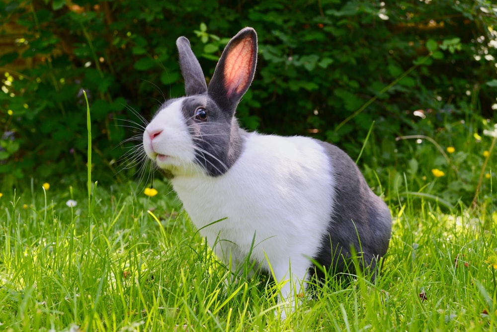
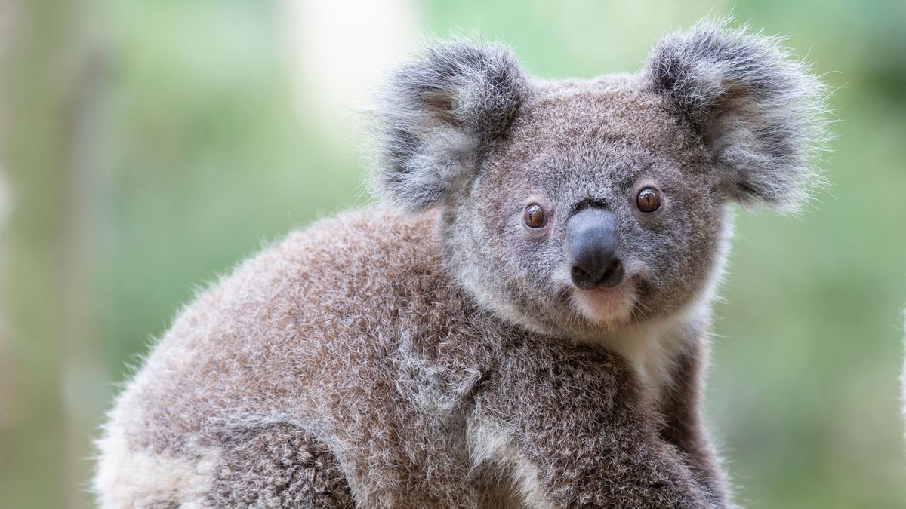
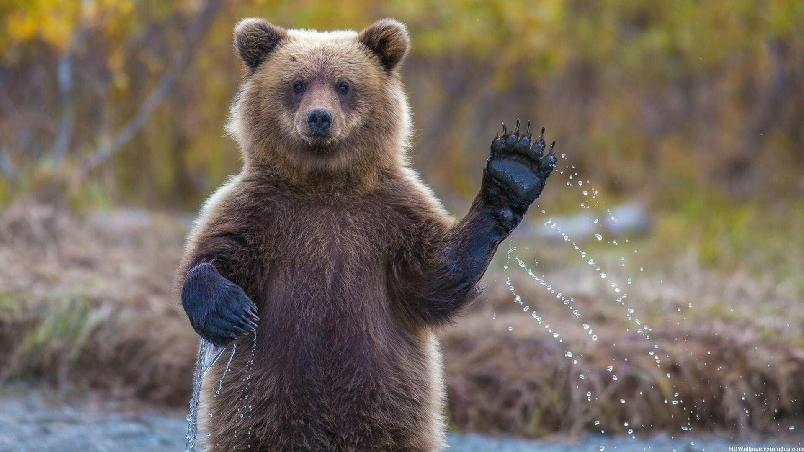

DESCRIPTIONS OF OUR ANIMALS
AN ANTELOPE

Here is an antelope, it is 8months in age, they are deer-like herbivores (feed on green grass)
that vary enormously in size, depending on the species. They have long legs, slender necks, and
large ears.
One of the characteristic features of antelopes are their horns which have a bone core covered in
keratin(the same substance which make our hair and fingernails).
A TIGER

A tiger has a muscular body with powerful forelimb, a large head and a tail that is about half
the lenght of its body. its pelage is dense and heavy, and colouration varies between shades of
orange and brown with white ventral areas and distinctive vertical black stripes that are unique in
each individual.
A RABBIT

Rabbits are small, furry mammals with long ears, short fluffy tails, and strong, large hind
legs. They have 2 pairs of sharp incisors (front teeth), one pair on top and one pair on the bottom.
They also have 2 peg teeth behind the top incisors.
A KOALA

Koalas are well-known for their large round head, big furry ears and big black nose. Their fur
is usually grey-brown in colour with white fur on the chest, inner arms, ears and bottom. They have
no fur on their nose or the palms of their paws. ... Koalas have poor vision and rely heavily on
their other senses.
A BEAR

Bears have large bodies, stocky legs, a long snout, shaggy hair, paws with claws, and a short
tail. Even though bears are big and heavy, they can run very fast and are also good at climbing and
swimming. Bears have a large brain and are one of the more intelligent mammals.